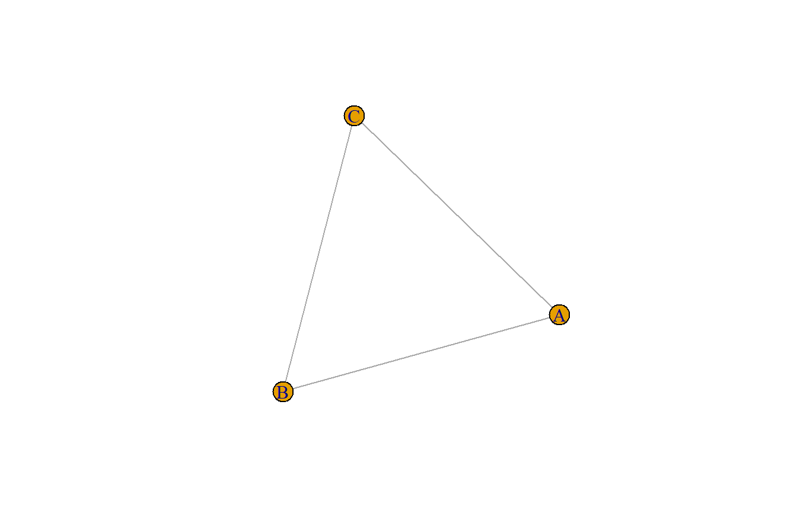

df <- rio::import(file = "adat/elek_listaja_7.xlsx")
df
#> from to
#> 1 A B
#> 2 A C
#> 3 A D
#> 4 A E
#> 5 A F
#> 6 E F
#> 7 F G2 Alapfogalmak
A hálózatelemzés különböző egységek, entitások, egyének között fennálló kapcsolatokat elemez.
2.1 A fejezet fontos fogalmai
- hálózat / gráf
-
csúcsok és élek együttese
- csúcs / csomópont
-
tetszőleges egyed, személy, tárgy vagy fogalom
- él / kapcsolat / link
-
Két csúcs közötti kapcsolat. Az élek lehetnek irányítottak és irányítatlanok.
- irányított él
-
olyan él, amely határozottan egyik csúcsból a másik csúcsba mutató kapcsolatot reprezentál, például weboldalak között a linkek.
- irányítatlan él
-
olyan él, amely nem reprezentál egy irányba mutató kapcsolatot, a két csúcs ilyenkor oda-vissza irányba kapcsolódik egymáshoz.
- N
-
csúcsok száma a gráfban
- L
-
élek száma a gráfban
- teljes gráf
-
olyan gráf, amelynek minden csúcsa kapcsolódik az összes többi csúcshoz. Teljes gráfban \(L=\frac{N(N-1)}{2}\)
- fokszám
-
egy csúcs fokszáma az csúcshoz kapcsolódó élek száma. Jele: \(k\)
- átlagos fokszám
-
Irányítatlan hálózatban az egyes csúcsok fokszámait összeadjuk és osztjuk a csúcsok számával: \(\bar{k} = \frac{k_1+k_2+\dots+k_N}{N} = \frac{2L}{N}\). Irányított hálózatban külön vizsgáljuk a bejövő (\(k_i^{be}\)) és a kimenő éleket (\(k_i^{ki}\)). Egy csúcs összfokszáma: \(k_i=k_i^{be} + k_i^{ki}\). Irányított gráfban \(\bar{k^{be}} = \frac{k_1^{be}+k_2^{be}+\dots+k_N^{be}}{N}=\frac{L}{N}\), \(\bar{k^{ki}} = \frac{k_1^{ki}+k_2^{ki}+\dots+k_N^{ki}}{N}=\frac{L}{N}\)
- fokszámeloszlás
-
annak a valószínűsége, hogy a gráfban egy véletlenszerűen kiválasztott pontnak éppen \(k\) legyen a fokszáma. Jelölése: \(p_k\). Véletlen gráfokban a fokszámeloszlás Poisson-eloszlást követ, skálafüggetlen hálózatokban hatványfüggvény szerinti eloszlást.
2.2 Hálózatok létrehozása
Ebben a fejezetben tovább részletezzük a hálózatok létrehozását. A korábban látott R függvényeken túl, a következőkről lesz szó:
as_adjacency_matrix()- igraph objektum szomszédsági mátrixszá alakításagraph.adjacency()- igraph objektum létrehozása szomszédsági mátrixbólgraph_from_literal()- igraph objektum létrehozása literálbólmake_full_graph()- teljes gráfok készítésemake_ring()- gyűrű létrehozása.make_star()- csillag létrehozásamake_tree()- fa létrehozása
Alapvetően kétféle adatstruktúrából építhetünk hálózatot:
- élek listájából és
- szomszédsági mátrixból.
2.2.1 Élek listája
Korábban már láttuk, hogyan hozhatunk létre élek listájából gráfot. Most az elek_listaja_7.xlsx-ben rendeltünk össze 7 csúcsot 7 éllel.
Készítsük el és ábrázoljuk a fenti hálózatot.
library(igraph)
g <- graph.edgelist(as.matrix(df), directed = F)
plot(g)A fontos információk könnyen lekérdezhetők.
V(g)
#> + 7/7 vertices, named, from f261d85:
#> [1] A B C D E F G
E(g)
#> + 7/7 edges from f261d85 (vertex names):
#> [1] A--B A--C A--D A--E A--F E--F F--GEgy létező gráf szomszédsági mátrixa könnyen meghatározható.
as_adjacency_matrix(g) # igraph objektum szomszédsági mátrixszá alakítása
#> 7 x 7 sparse Matrix of class "dgCMatrix"
#> A B C D E F G
#> A . 1 1 1 1 1 .
#> B 1 . . . . . .
#> C 1 . . . . . .
#> D 1 . . . . . .
#> E 1 . . . . 1 .
#> F 1 . . . 1 . 1
#> G . . . . . 1 .Látható, hogy irányítatlan gráfok esetében szimmetrikus a szomszédsági mátrix. Ott van 1-es, ahol a két csúcs között él vezet, és ott 0 (az egyszerűbb olvashatóság miatt pont), ahol nem.
2.2.2 Szomszédsági mátrix
Könnyen létrehozhatunk magunk is szomszédsági mátrixot, és abból igraph objektumot.
Első esetben készítsünk 3 izolált csúcsból gráfot.
node_name <- c("A", "B", "C") # csúcsok nevei
# mátrix létrehozása
m1 <- matrix(data = c(0, 0, 0,
0, 0, 0,
0, 0, 0),
byrow = T,
nrow = length(node_name), ncol = length(node_name),
dimnames = list(node_name, node_name))
m1
#> A B C
#> A 0 0 0
#> B 0 0 0
#> C 0 0 0# gráf létrehozása
g1 <- graph.adjacency(m1, mode = "undirected")
plot(g1) # gráf megrajzolásaA 3 csúcsból kettő legyen összekötve
node_name <- c("A", "B", "C") # csúcsok nevei
# mátrix létrehozása
m2 <- matrix(data = c(0, 1, 0,
1, 0, 0,
0, 0, 0),
byrow = T,
nrow = length(node_name), ncol = length(node_name),
dimnames = list(node_name, node_name))
m2
#> A B C
#> A 0 1 0
#> B 1 0 0
#> C 0 0 0# gráf létrehozása
g2 <- graph.adjacency(m2, mode = "undirected")
plot(g2) # gráf megrajzolásaA 3 csúcsból két pár legyen összekötve
node_name <- c("A", "B", "C") # csúcsok nevei
# mátrix létrehozása
m3 <- matrix(data = c(0, 1, 0,
1, 0, 1,
0, 1, 0),
byrow = T,
nrow = length(node_name), ncol = length(node_name),
dimnames = list(node_name, node_name))
m3
#> A B C
#> A 0 1 0
#> B 1 0 1
#> C 0 1 0# gráf létrehozása
g3 <- graph.adjacency(m3, mode = "undirected")
plot(g3) # gráf megrajzolásaMinden csúcs össze legyen kötve.
node_name <- c("A", "B", "C") # csúcsok nevei
# mátrix létrehozása
m4 <- matrix(data = c(0, 1, 1,
1, 0, 1,
1, 1, 0),
byrow = T,
nrow = length(node_name), ncol = length(node_name),
dimnames = list(node_name, node_name))
m4
#> A B C
#> A 0 1 1
#> B 1 0 1
#> C 1 1 0# gráf létrehozása
g4 <- graph.adjacency(m4, mode = "undirected")
plot(g4) # gráf megrajzolása2.2.3 Literális létrehozás
Kisebb hálózatok esetén nevekből is létrehozhatunk gráfot:
gs1 <- graph_from_literal(A, B, C);plot(gs1)
gs2 <- graph_from_literal(A-B, C);plot(gs2)
gs3 <- graph_from_literal(A-B-C);plot(gs3)
gs4 <- graph_from_literal(A-B-C, A-C);plot(gs4)

2.2.4 Speciális gráfok
Speciális gráfok létrehozását is megkönnyíti az {igraph} csomag.
Teljes gráfok készítése.
# teljes gráfok készítése
plot(make_full_graph(5, directed = FALSE, loops = FALSE))
plot(make_full_graph(10, directed = FALSE, loops = FALSE))
plot(make_full_graph(20, directed = FALSE, loops = FALSE))Gyűrű létrehozása.
# gyűrű létrehozása
plot(print_all(make_ring(5)))
#> IGRAPH f397e00 U--- 5 5 -- Ring graph
#> + attr: name (g/c), mutual (g/l), circular (g/l)
#> + edges from f397e00:
#> [1] 1--2 2--3 3--4 4--5 1--5
plot(print_all(make_ring(10)))
#> IGRAPH f3992e8 U--- 10 10 -- Ring graph
#> + attr: name (g/c), mutual (g/l), circular (g/l)
#> + edges from f3992e8:
#> [1] 1-- 2 2-- 3 3-- 4 4-- 5 5-- 6 6-- 7 7-- 8 8-- 9 9--10 1--10
plot(print_all(make_ring(20)))
#> IGRAPH f39e3c1 U--- 20 20 -- Ring graph
#> + attr: name (g/c), mutual (g/l), circular (g/l)
#> + edges from f39e3c1:
#> [1] 1-- 2 2-- 3 3-- 4 4-- 5 5-- 6 6-- 7 7-- 8 8-- 9 ...
#> [10] 10--11 11--12 12--13 13--14 14--15 15--16 16--17 17--18 ...
#> [19] 19--20 1--20Csillag létrehozása.
# csillag létrehozása
plot(make_star(5, mode = "undirected"))
plot(make_star(10, mode = "undirected"))
plot(make_star(20, mode = "undirected"))
Fa létrehozása
# fa létrehozása
plot(make_tree(10, 3, mode = "undirected"))
plot(make_tree(20, 3, mode = "undirected"))
plot(make_tree(60, 3, mode = "undirected"))2.3 Hálózat attribútumai
Ebben a fejezetben további jellemzőkkel látjuk el a hálózatokat. A korábban látott R függvényeken túl, a következőkről lesz szó:
vertex_attr()- csúcsok attribútumainak lekérdezéseedge_attr()- élek attribútumainak lekérdezéseset_vertex_attr()- csúcsok attribútumainak beállításaset_edge_attr()- élek attribútumainak beállításagraph_from_data_frame()- gráf létrehozása attribútumokkal adattáblák alapján.
2.3.1 Attribútumok hozzáadása
Egy hálózatban a csúcsok és élek számos tulajdonsággal (vagy más néven attribútummal) rendelkezhetnek.
A korábbi példában létrehozott g gráf egyetlen csúcs attribútummal rendelkezik. A csúcsok nevével vagy más néven címkéjével.
g # az igraph objektum kiírása a képernyőre
#> IGRAPH f261d85 UN-- 7 7 --
#> + attr: name (v/c)
#> + edges from f261d85 (vertex names):
#> [1] A--B A--C A--D A--E A--F E--F F--GA csúcsok és élek aktuális attribútumait könnyen meghatározhatjuk.
vertex_attr(g) # csúcsok attribútumai
#> $name
#> [1] "A" "B" "C" "D" "E" "F" "G"edge_attr(g) # élek attribútumai (jelenleg üres)
#> named list()Ha szeretnénk életkort hozzáadni minden csúcshoz, akkor a set_vertex_attr() függvényt használjuk.
g <- set_vertex_attr(graph = g,
name = "age",
value = c(20, 25, 21, 23, 24, 23, 22)
)Ha most ellenőrizzük a csúcsok jellemzőit, akkor már a neven kívül a kor attribútumot is láthatjuk a listában.
vertex_attr(g) # csúcsok attribútumai
#> $name
#> [1] "A" "B" "C" "D" "E" "F" "G"
#>
#> $age
#> [1] 20 25 21 23 24 23 22Ha szeretnénk a barátság erősségének egyfajta mérőszámaként a heti telefonhívások számt jellemzőként hozzáadni minden egyes élhez, akkor a set_edge_attr() függvényt használjuk.
g <- set_edge_attr(graph = g,
name = "frequency",
value = c(2, 1, 1, 1, 3, 2, 4)
)Ha most ellenőrizzük az élek jellemzőit, akkor már nem üres listát kapunk.
edge_attr(g) # élek attribútumai
#> $frequency
#> [1] 2 1 1 1 3 2 4Az attribútumok meghatározása történhet a gráf létrehozásával egyidőben.
Ha előkészítettük az attribútumokkal rendelkező csúcsok és élek adattábláit, akkor a graph_from_data_frame() függvénnyel egy lépéyben is létrehozhatjuk a hálózatot.
nodes_df <- rio::import(file = "adat/vertices_df_7.xlsx")
edges_df <- rio::import(file = "adat/edges_df_7.xlsx")
g_from_df <- graph_from_data_frame(d = edges_df, vertices = nodes_df, directed = F)plot(g_from_df) # hálózat kirajzolásavertex_attr(g_from_df) # csúcsok attribútumai
#> $name
#> [1] "A" "B" "C" "D" "E" "F" "G"
#>
#> $age
#> [1] 20 25 21 23 24 23 22
edge_attr(g_from_df) # élek attribútumai
#> $frequency
#> [1] 2 1 1 1 3 2 4Ahogyan a fenti outputok is utalnak rá a csúcs és él attribútumok a dollárjeles ($) hivatkozással is elérhetők.
V(g)$name # a csúcsok 'name' attribútuma
#> [1] "A" "B" "C" "D" "E" "F" "G"
V(g)$age # a csúcsok 'age' attribútuma
#> [1] 20 25 21 23 24 23 22
E(g)$frequency # az élek 'frequency' attribútuma
#> [1] 2 1 1 1 3 2 42.3.2 Élek szűrése
Különösen nagy hálózatok esetében fontos lehet a számunkra érdekes élek lekérdezése vagy szűrése. A dupla szögletes zárójelet ([[) használhatjuk a kívánt élek eléréséhez. Az .inc() segítségével a csúcsok nevére tehetünk megszorítást, de egyszerűen használhatjuk az élek egyes attribútumait is.
E(g)[[.inc('E')]] # azon élek leszűrése, ahol az egyik csúcs az 'E'
#> + 2/7 edges from f261d85 (vertex names):
#> tail head tid hid frequency
#> 4 A E 1 5 1
#> 6 E F 5 6 2E(g)[[frequency >= 3]] # azon élek leszűrése, ahol az élek frequency attribútuma legalább 3
#> + 2/7 edges from f261d85 (vertex names):
#> tail head tid hid frequency
#> 5 A F 1 6 3
#> 7 F G 6 7 42.3.2.1 Feladat
A
friends.xlsxéleket tartalmazó adattáblája alapján hozzunk létre egy új gráfot, majd az egyes csúcsokhoz rendre adjuk hozzá a következő attribútumokat:
- genders: “M”, “F”, “F”, “M”, “M”, “M”, “F”, “M”, “M”, “F”, “M”, “F”, “M”, “F”, “M”, “M”
- ages: 18, 19, 21, 20, 22, 18, 23, 21, 22, 20, 20, 22, 21, 18, 19, 20
Az egyes élekhez adjuk hozzá, hogy a barátok hetente hány órát töltenek együtt, melyek rendre:
- hours: 1, 2, 2, 1, 2, 5, 5, 1, 1, 3, 2, 1, 1, 5, 1, 2, 4, 1, 3, 1, 1, 1, 4, 1, 3, 3, 4.
Ezt követően kérdezzük le a csúcsok attribútumait, valamint az első 5 csúcs nevét. Majd az élek attribútumait, valamint a Britt-et tartalmazó éleket, és azokat a barátokat, akik legalább 4 órát töltenek együtt hetente.
Adatok beolvasása, előkészítése:
friends_edges_df <- rio::import(file = "adat/friends.xlsx")
# nemre vonatkozó információ
genders <- c("M", "F", "F", "M", "M", "M", "F", "M", "M", "F", "M", "F", "M", "F", "M", "M")
# életkorra vonatkozó információ
ages <- c(18, 19, 21, 20, 22, 18, 23, 21, 22, 20, 20, 22, 21, 18, 19, 20)Gráf létrehozása:
# mátrixszá alakítjuk
friends_edges_mat <- as.matrix(friends_edges_df)
# igraph objektum létrehozása
friends_g <- graph.edgelist(friends_edges_mat, directed = FALSE)Csúcsokra vonatkozó utasítások:
# Létrehozunk egy 'gender' nevű új attribútumot a csúcsokhoz
friends_g <- set_vertex_attr(friends_g, "gender", value = genders)
# Létrehozunk egy 'age' nevű új attribútumot a csúcsokhoz
friends_g <- set_vertex_attr(friends_g, "age", value = ages)
# A csúcsok összes attribútumának lekérdezése, lista output
vertex_attr(friends_g)
#> $name
#> [1] "Jessie" "Sidney" "Britt" "Donnie" "Karl" "Berry"
#> [7] "Rene" "Shayne" "Elisha" "Whitney" "Odell" "Lacy"
#> [13] "Eugene" "Jude" "Rickie" "Tommy"
#>
#> $gender
#> [1] "M" "F" "F" "M" "M" "M" "F" "M" "M" "F" "M" "F" "M" "F" "M"
#> [16] "M"
#>
#> $age
#> [1] 18 19 21 20 22 18 23 21 22 20 20 22 21 18 19 20
# Az első 5 csúcs attribútumának lekérdezése, adattábla nézet
V(friends_g)[[1:5]]
#> + 5/16 vertices, named, from f450434:
#> name gender age
#> 1 Jessie M 18
#> 2 Sidney F 19
#> 3 Britt F 21
#> 4 Donnie M 20
#> 5 Karl M 22Élekre vonatkozó utasítások:
# A barátok hetente hány órát töltenek együtt
hours <- c(1, 2, 2, 1, 2, 5, 5, 1, 1, 3, 2, 1, 1, 5, 1, 2, 4, 1, 3, 1, 1, 1, 4, 1, 3, 3, 4)
# Él attribútum (`hours`) hozzáadása
friends_g <- set_edge_attr(friends_g, "hours", value = hours)
# Az él attribútumok megjelenítése
edge_attr(friends_g)
#> $hours
#> [1] 1 2 2 1 2 5 5 1 1 3 2 1 1 5 1 2 4 1 3 1 1 1 4 1 3 3 4
# Azon élek megjelenítése, amelyek tartalmazzák a "Britt" nevet
E(friends_g)[[.inc('Britt')]]
#> + 5/27 edges from f450434 (vertex names):
#> tail head tid hid hours
#> 2 Jessie Britt 1 3 2
#> 3 Sidney Britt 2 3 2
#> 7 Britt Rene 3 7 5
#> 23 Britt Lacy 3 12 4
#> 26 Britt Whitney 3 10 3
# Az összes olyan él (barát) megjelenítése, akik hetente 4 óránál többet vagy 4 órát töltenek együtt
E(friends_g)[[hours>=4]]
#> + 6/27 edges from f450434 (vertex names):
#> tail head tid hid hours
#> 6 Sidney Rene 2 7 5
#> 7 Britt Rene 3 7 5
#> 14 Rene Whitney 7 10 5
#> 17 Rene Lacy 7 12 4
#> 23 Britt Lacy 3 12 4
#> 27 Karl Tommy 5 16 42.3.3 Hálózat megjelenítése
A hálózatok megjelenítésén is fejleszthetünk a csúcsra vonatkozó attribútumok segítségével.
Adjunk egy új color attribútumot a csúcsokhoz. Minden csúcs színe vagy piros vagy fehér lesz az életkortól függően.
V(g)$color <- ifelse(V(g)$age > 22, "red", "white") A plot() függvény felhasználja ezt az információt (a V8g)$color-t), de alapértelmezett (minden csúcsra vonatkozó) értékeket is beállíthatunk.
plot(g, vertex.label.color="black")A hálózatok megjelenése során a legfontosabb paraméterek:
- csúcsok esetében:
- méret (például több kapcsolattal rendelkező csúcsok nagyobb méretben jelennek meg)
- címke (jelentős csúcsok azonosítása, de a sok szöveg zavaró lehet)
- szín (különböző kategóriák megjelenése, például nem)
- forma (különböző kategóriák megjelenése, például nem)
- élek esetében:
- vastagság (az él súlya, fontossága)
- szín (kapcsolat kategorikus jellemzője)
- vonal típusa (kapcsolat kategorikus jellemzője).
A fentieken túl az {igraph} csomag számos elrendezést kínál a megjelenítés során, amelyek a legoptimálisabb vizualizációt biztosíthatják. Ezek mindegyike biztosítja:
- minimalizálja az élek kereszteződését
- a csúcsok nem lapolják át egymást
- az élek hossza egyenlő, amennyire lehet
- a gráf legyen szimmetrikus, amennyire lehet
- a nagyobb hatású csúcsok legyenek a középpontban
Ha szeretnénk speciális elrendezést választani, akkor a layout= argumentumot kell használnunk a plot() függvényben.
plot(g, layout = layout_in_circle(g))plot(g, layout = layout_with_fr(g))plot(g, layout = layout_with_kk(g))plot(g, layout = layout_on_grid(g))plot(g, layout = layout_with_lgl(g))plot(g, layout = layout_as_tree(g))A legtöbb esetben a layout_nicely() megfelelő választás, amely maga választja ki az optimális megjelenést.
plot(g, layout = layout_nicely(g))2.3.3.1 Feladat
Hozzunk létre adattáblákból egy hálózatot. A
friends2_edges_df.xlsxaz éleket, afriends2_nodes_df.xlsxa csúcsokat tartalmazza, mindkét adattábla >tartalmaz attribútumokat is (az éleknél azhours(az egymással töltött heti óraszám), a csúcsoknál agender(nem)).
- Kérdezzük le az összes olyan élt (barátot), akik hetente 5 óránál többet vagy 5 órát töltenek együtt.
- Megjelenítéshez a csúcsok színét állítsuk be
"orange", illetve"dodgerblue"színekre.- Próbáljuk ki a körhálózatot, a Fruchterman-Reingold elrendezésű hálózatot, a faszerkezet megjelenítését és a legjobban illeszkedő megjelenítést.
- Módosítsuk a hálózat éleinek vastagságát a súlyuk alapján. A súly legyen az együtt töltött órák száma. A
plot()függvényben használjuk a >edge.width=argumentumot.- Hozzunk létre egy új gráfobjektumot a meglévő alapján. Az új gráf minden éle két óránál nagyobb súlyú lesz. Ez a
delete_edges()használatával >valósítható meg, amely két argumentumból áll. Az első a gráfobjektum, a második pedig az eltávolítandó élek részhalmaza. Ebben az esetben eltávolít >minden olyan élt, amelynek értéke kevesebb, mint két óra.
Gráf létrehozása:
friends2_edges_df <- rio::import(file = "adat/friends2_edges_df.xlsx")
friends2_nodes_df <- rio::import(file = "adat/friends2_nodes_df.xlsx")
# igraph objektum létrehozása attributumok felvitelével együtt
friends2_g <- graph_from_data_frame(d = friends2_edges_df, vertices = friends2_nodes_df, directed = FALSE)Kérdezzük le az összes olyan élt (barátot), akik hetente 5 óránál többet vagy 5 órát töltenek együtt:
# Az összes olyan él (barát) megjelenítése, akik hetente 5 óránál többet vagy 5 órát töltenek együtt
E(friends2_g)[[hours >= 5]]
#> + 4/25 edges from f4dde4a (vertex names):
#> tail head tid hid hours
#> 5 Kelley Valentine 3 6 5
#> 8 Ronald Jasmine 4 8 5
#> 12 Valentine Perry 6 15 5
#> 15 Jasmine Juan 8 9 6Megjelenítéshez a csúcsok színét állítsuk be "orange", illetve "dodgerblue" színekre:
# A csúcsok színének beállítása nem alapján
V(friends2_g)$color <- ifelse(V(friends2_g)$gender == "F", "orange", "dodgerblue")# Az igraph ábra megjelenítése
plot(friends2_g, vertex.label.color = "black")Próbáljuk ki a körhálózatot, a Fruchterman-Reingold elrendezésű hálózatot, a faszerkezet megjelenítését és a legjobban illeszkedő megjelenítést:
# Körhálózat megjelenítése
plot(friends2_g, vertex.label.color = "black", layout = layout_in_circle(friends2_g))# Fruchterman-Reingold elrendezésű hálózat
plot(friends2_g, vertex.label.color = "black", layout = layout_with_fr(friends2_g))# Faszerkezet megjelenítése
m <- layout_as_tree(friends2_g)
plot(friends2_g, vertex.label.color = "black", layout = m)# a legjobban illeszkedő megjelenítés
m1 <- layout_nicely(friends2_g)
plot(friends2_g, vertex.label.color = "black", layout = m1)Módosítsuk a hálózat éleinek vastagságát a súlyuk alapján. A súly legyen az együtt töltött órák száma. A plot() függvényben használjuk a edge.width= argumentumot.
# Hozzunk létre egy `w1` vektort élsúlyozásokból a barátok együtt töltött órák száma alapján.
w1 <- E(friends2_g)$hours
# Ábrázoljuk a hálózatot úgy, hogy az `edge.width=` az imént létrehozott súlyvektorra legyen beállítva.
# Az edge.color = 'black' használata biztosítja, hogy minden él fekete legyen.
m1 <- layout_nicely(friends2_g)
plot(friends2_g,
vertex.label.color = "black",
edge.color = 'black',
edge.width = w1,
layout = m1)Hozzunk létre egy új gráfobjektumot a meglévő alapján. Az új gráf minden éle két óránál nagyobb súlyú lesz. Ez a delete_edges() használatával valósítható meg, amely két argumentumból áll. Az első a gráfobjektum, a második pedig az eltávolítandó élek részhalmaza. Ebben az esetben eltávolít minden olyan élt, amelynek értéke kevesebb, mint két óra.
# új gráf létrehozása élek törlésével
friends2_g2 <- delete_edges(friends2_g, E(friends2_g)[hours < 2])# Végül rajzoljuk meg az új `friends2_g2` hálózatot az élszélességek és az elrendezés megfelelő vektorával.
w2 <- E(friends2_g2)$hours
m2 <- layout_nicely(friends2_g2)
plot(friends2_g2,
vertex.label.color = "black",
edge.color = 'black',
edge.width = w2,
layout = m2)2.3.3.2 Feladat
Hozzuk létre a következő gráfot, írassuk ki a szomszédsági mátrixát, a
degree()függvénnyel a fokszámokat, az átlagos fokszámot és adegree.distribution()függvénnyel a fokszámeloszlást.
Hozzuk létre a fenti irányítatlan gráfot az élek listájából:
friends <- tribble(
~name1, ~name2,
1, 2,
1, 3,
2, 3,
2, 4
)
friends.mat <- as.matrix(friends)
g <- graph.edgelist(friends.mat, directed = FALSE)A hálózat megjelenítése:
plot(g)Szomszédsági mátrix:
as_adjacency_matrix(g)
#> 4 x 4 sparse Matrix of class "dgCMatrix"
#>
#> [1,] . 1 1 .
#> [2,] 1 . 1 1
#> [3,] 1 1 . .
#> [4,] . 1 . .A gráf lekérdezése:
V(g) # a csúcsok száma és megnevezése
#> + 4/4 vertices, from f5e16f2:
#> [1] 1 2 3 4
E(g) # az élek száma és az élek azonosítása csúcsokkal
#> + 4/4 edges from f5e16f2:
#> [1] 1--2 1--3 2--3 2--4
vcount(g) # élek száma
#> [1] 4
ecount(g) # csúcsok száma
#> [1] 4Az egyes csúcsok fokszámai:
degree(g)
#> [1] 2 3 2 1A fokszámok átlaga:
mean(degree(g))
#> [1] 2A fokszámeloszlás:
degree.distribution(g)
#> [1] 0.00 0.25 0.50 0.252.4 Königsbergi hidak problémája - 1736
Haladjunk át minden hídon de csak pontosan egyszer. Részletek.
Két szempontból fontos:
- bizonyos problémák megoldása egyszerűbb, ha gráfként ábrázoljuk őket
- az adott gráf belső tulajdonságai meghatározóak lehetnek
library(tidyverse)
friends <- tribble(
~name1, ~name2,
"A","B",
"A","C",
"A","D",
"B","A",
"B","D",
"C","A",
"C","D"
)
head(friends) # az első 6 sor
#> # A tibble: 6 × 2
#> name1 name2
#> <chr> <chr>
#> 1 A B
#> 2 A C
#> 3 A D
#> 4 B A
#> 5 B D
#> 6 C A# install.packages("igraph")
library(igraph)
# mátrixszá alakítjuk
friends.mat <- as.matrix(friends)
# igraph objektum létrehozása
g <- graph.edgelist(friends.mat, directed = FALSE)Hogyan jeleníthetjük meg a hálózatot?
# A hálózat megjelenítése
plot(g)has_eulerian_path(g)
#> [1] FALSE
has_eulerian_cycle(g)
#> [1] FALSE- 1875-ben a B és C terület között új hidat építettek, így pontosan 2 páratlan fokszámú csúcs keletkezett, és a probléma megoldhatóvá vált.
library(tidyverse)
friends <- tribble(
~name1, ~name2,
"A","B",
"A","C",
"A","D",
"B","A",
"B","D",
"C","A",
"C","D",
"B","C"
)
head(friends) # az első 6 sor
#> # A tibble: 6 × 2
#> name1 name2
#> <chr> <chr>
#> 1 A B
#> 2 A C
#> 3 A D
#> 4 B A
#> 5 B D
#> 6 C A# install.packages("igraph")
library(igraph)
# mátrixszá alakítjuk
friends.mat <- as.matrix(friends)
# igraph objektum létrehozása
g <- graph.edgelist(friends.mat, directed = FALSE)Hogyan jeleníthetjük meg a hálózatot?
# A hálózat megjelenítése
plot(g)has_eulerian_path(g)
#> [1] TRUE
has_eulerian_cycle(g)
#> [1] FALSE
eulerian_path(g)
#> $epath
#> + 8/8 edges from f64a9cb (vertex names):
#> [1] A--B A--B A--C A--C A--D B--D B--C C--D
#>
#> $vpath
#> + 9/4 vertices, named, from f64a9cb:
#> [1] A B A C A D B C D